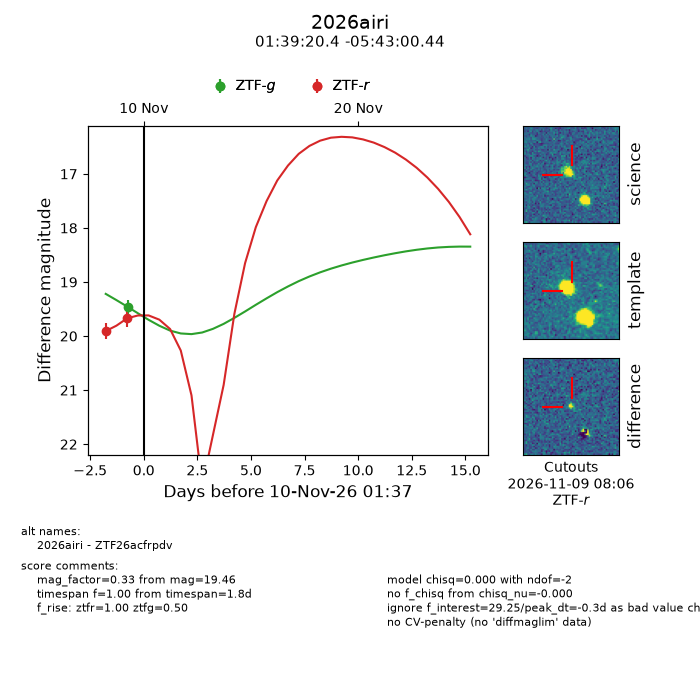
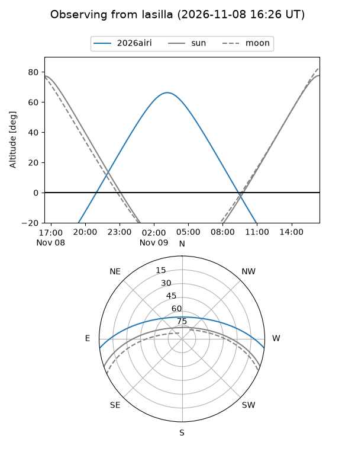
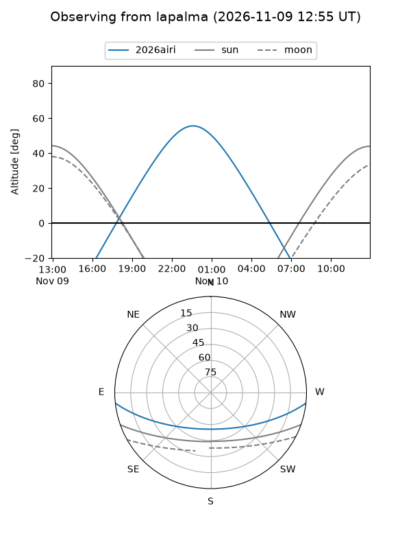
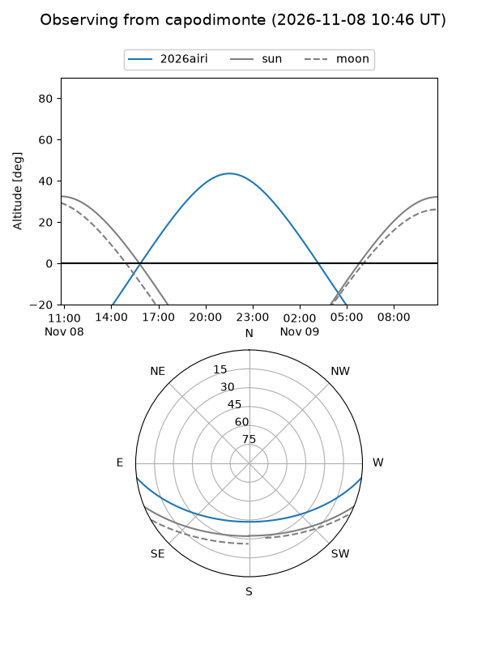
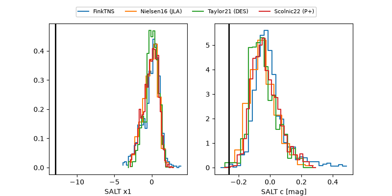

2026airi
Target 2026airi at 2026-11-10 01:39
Aliases and brokers:
FINK-ZTF: ztf.fink-portal.org/ZTF26acfrpdv
Lasair-ZTF: lasair-ztf.lsst.ac.uk/objects/ZTF26acfrpdv
ALeRCE-ZTF: alerce.online/object/ZTF26acfrpdv
YSE-PZ: ziggy.ucolick.org/yse/transient_detail/2026airi
TNS name: wis-tns.org/object/2026airi
Direct TNS query: direct search
alt names
ZTF26acfrpdv (ztf,fink_ztf)
2026airi (tns,yse)
Coordinates:
equatorial (ra, dec) = 24.8348,-5.71679
equatorial (HMS+DMS) = 01:39:20.36,-05:43:00.44
galactic (l, b) = (153.0999,-65.74277)
Flags:
peak dt: -0.3
Photometry:
last ztfg=19.46, ztfr=19.67
1 ztfg, 2 ztfr detections
Lightcurve

Visibility



Additional plots
